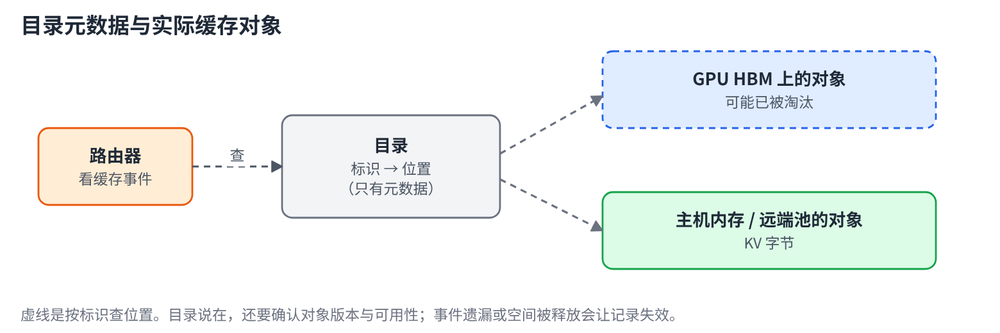
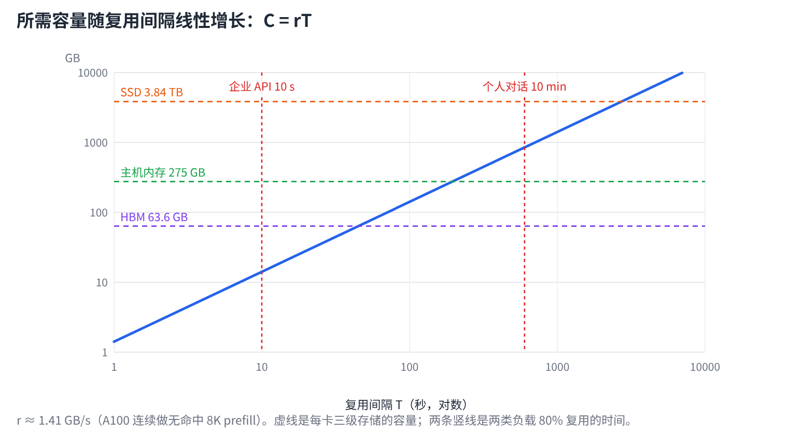
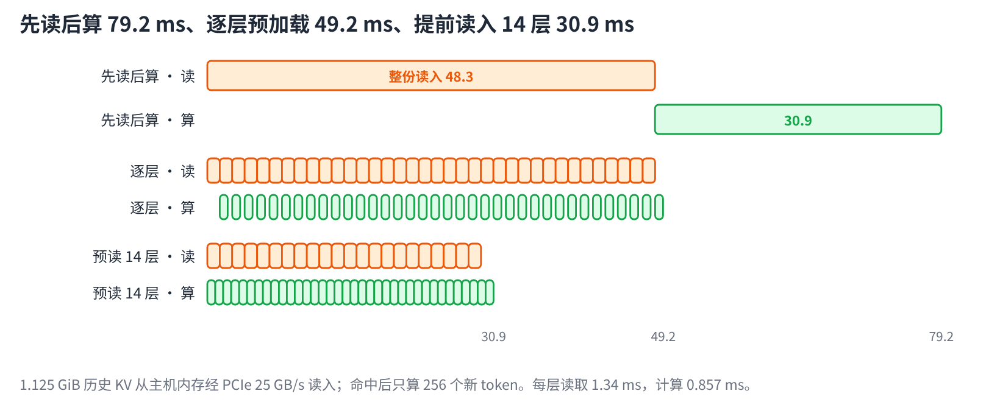
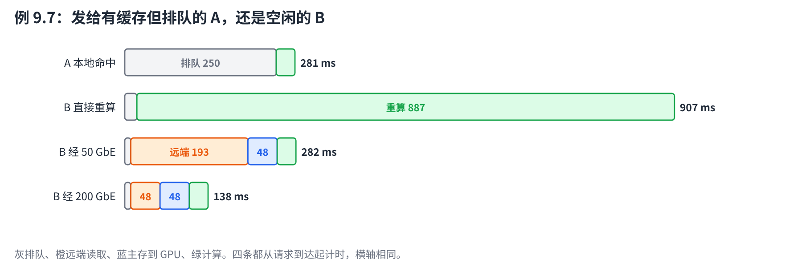
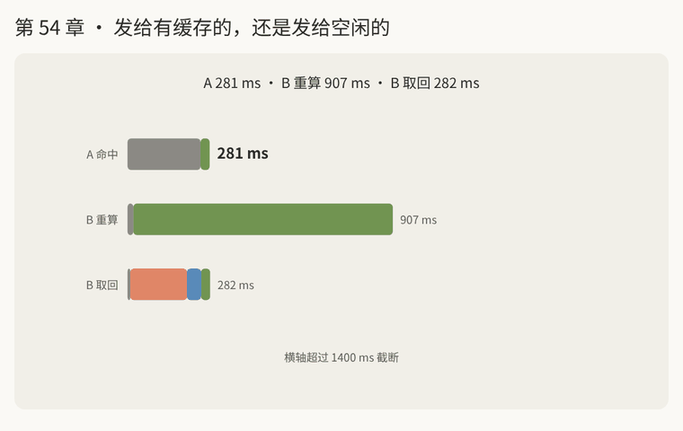

第 54 章 · KV 的分布、共享与请求路由：存哪一级、何时取回、发给谁
本地运行
git clone https://github.com/wikieden/ai-infra-from-constraints
cd ai-infra-from-constraints/code/notebooks
pip install jupyterlab torch numpy
jupyter lab ch54_kv_routing.ipynb也可以下载后直接用 VS Code 打开 .ipynb 运行。需要 GPU 的章节在 Colab 里选「代码执行程序 → 更改运行时类型 → GPU」。
本章回答：两份 KV 什么时候能互相替代？目录和对象为什么要分开？一份 8K 前缀放在 HBM、主机内存、SSD、远端池，取回各要多久，各能留多久？保存后取回什么时候比重算快？逐层预加载为什么还要预先读 14 层？SSD 的写入寿命为什么只允许写 3% 的新 KV？缓存在忙的机器上、空闲的机器没缓存，请求该发给谁？
讲解日期：2026-11-24 · 上一章：第 53 章 专家放置、复制与负载均衡 · 下一章：第 55 章 扩缩容、故障恢复与部署方案比较
对应原文：materials/ai-infra-book/manuscripts/09-分布式推理.md§9.5 L493–L667（例 9.7，图 9-28 至 9-41）
本章缩写：HBM = High Bandwidth Memory（高 / 带宽 / 内存）· SSD = Solid-State Drive（固态 / 硬盘）· NVMe = Non-Volatile Memory Express（非易失 / 内存 / 快速通道）· LRU = Least Recently Used（最近 / 最少 / 使用）· FIFO = First In First Out（先进 / 先出）· DWPD = Drive Writes Per Day（每天 / 写满整盘 / 次数）· SWA = Sliding Window Attention（滑动 / 窗口 / 注意力）。全部缩写见 缩写与术语表
讲解
第一步：缓存标识，目录与对象（2026-11-24）
类比：图书馆借书。 书名一样不够，还要同一版次、同一译者（模型版本、adapter、位置）；目录卡告诉你书在哪个架子（目录），书本身才能拿来读（对象）。目录说有、书被借走了，白跑一趟。
原文 L495–L505：
- 缓存键要沿前缀链标识出生成这份状态的整个计算：模型与 adapter 版本、token 序列、位置索引、状态格式；滑动窗口或递推状态还要带位置和更新时刻。
- 容量相加不等于共享缓存：两个实例各有 4 GiB 私有主机缓存，同一份 1.125 GiB 前缀两边各存一份共 2.25 GiB，谁也用不到对方的。接到同一个共享存储后端，一份就能服务两边，但用前可能还要取回本地。
- 路由用的缓存事件只带位置和标识，不带 KV。事件遗漏、延迟或空间被释放，都会让记录的位置失效：路由前要确认对象版本与可用性。

图 54-1 · 目录用于定位，对象用于恢复计算；GPU 上的副本被淘汰时，CPU 上的可能还在。
一句话：相同文本不等于相同状态；目录说在，还要对象真在。
第二步：四级存储，取回多久、留多久（2026-11-24）
类比：家里的东西放哪。 手边抽屉（HBM）、柜子（主机内存）、储物间（SSD）、外面的仓库（远端池）。越远越大，拿一次越慢；但只要拿得比重新做一份快，放哪都划算，问题变成"放得下多久"。
原文 L507–L537：DGX A100 每张卡分到的一份，存 Qwen3-8B 的 8K 前缀（1.125 GiB）：
| 层级 | 每卡容量 | 路径 | 取回 8K 前缀 |
|---|---|---|---|
| HBM | ≤ 63.6 GB | 已在 GPU | 0 |
| 主机内存 | 256 GiB | PCIe 4.0 x16，25 GB/s | 48.3 ms |
| 本地 SSD | 3.84 TB | 顺序读 7.1 GB/s | 170 ms |
| 远端池 | 随节点数 | 网卡 25 GB/s 再经 PCIe | 96.6 ms |
| 对照：A100 重算 | — | 峰值 50% | 856 ms |
容量定留多久。A100 连续做无命中的 8K prefill，每 0.856 s 产生 1.125 GiB，\(r \approx 1.41\) GB/s。按写入先后淘汰，容量 \(C\) 能存最近 \(C/r\) 秒：HBM 45 s，主机内存 195 s，SSD 2722 s（45 分钟）。要让间隔 \(T\) 内的复用都命中：

图 54-2 · 阿里云 trace：个人对话 80% 复用在 10 分钟内（要 846 GB，超过主机内存，要加 SSD），企业 API 80% 在 10 秒内（14.1 GB，HBM 就够）。两轴对数。
- \(r\) 越小越省：前缀命中越多、每 token KV 越小（MLA），需要的容量越少。
- 容量越大，命中率涨得越慢：Mooncake 一小时采样 trace（每块 512 token、LRU），1000 块 → 50,000 块命中率 30% → 50%，不限容量也只有 51%；50,000 块按 Qwen3-8B 约 3.77 TB。一半以上的块从没被再用过。
一句话：比重算快不是问题，留得够久才是；\(C \ge rT\)。
第三步：取回一次，还是每步都读；值不值得存（2026-11-24）
类比：参考书。 每查一个字都跑一趟图书馆（每步远程读）不行；借回来放桌上（取回一次驻留）可以，代价是占桌面。
原文 L545–L559：
- 每步远程读：100 次 decode 每次都读 1.125 GiB，累计占链路 4.83 s；要一秒做完需 121 GB/s，是 25 GB/s 的 4.8 倍。MLA 也要 57.6 GB/s。状态减半只把倍数减半。
- 取回一次驻留：占用 \(V\tau\)。不活跃会话放远端，恢复时取回，连续 decode 期间留在本地。
- 复用 \(k\) 次时，保存再取回比重算快的条件：
| 链路 | 结论 |
|---|---|
| 25 GB/s | 复用一次就值（96.6 ms vs 856 ms） |
| 1.41–2.82 GB/s | 至少复用两次 |
| < 1.41 GB/s（如 10 GbE 1.25 GB/s，取回 966 ms） | 取回一次就比重算慢，该重算 |
临界带宽 1.41 GB/s 正是 KV 的产生速率 \(r\)：取回要 \(V/B\)，重算要 \(V/r\)，链路比 GPU 产生这份 KV 快就该取回。SSD 写 288 ms、读 170 ms，复用一次 458 ms，仍比重算快。
一句话：带宽高过 KV 产生速率，取回就比重算快；每步都远程读永远不行。
第四步：读和算重叠，用排队时间预取（2026-11-24）
类比：做菜备料。 边洗下一样边炒这一样；洗菜比炒菜慢，就得提前洗好几样放着。
原文 L561–L591：命中后只算 256 个新 token，30.9 ms。

图 54-3 · 橙色读取（每层 1.34 ms），绿色计算（每层 0.857 ms）。三条横轴相同。
- 逐层预加载（CachedAttention）：第 \(i\) 层只用第 \(i\) 层的 KV，算这层时读后面的层。读比算慢，总时间仍由读取决定。
- 多读的部分要预先放进 HBM 缓冲：
新输入达到约 400 token，主机内存的读取就能被计算盖住（远端约 800、SSD 约 1400）。CachedAttention 在 LLaMA-13B 上：逐层预加载缩短 35%，加 15 层缓冲缩短 61%。 - SSD 用排队时间预取：SSD 读一层 4.73 ms，是算一层的 5.5 倍。请求还在队列里时就知道要哪份前缀，先读到主机内存；排队 ≥ 170 ms，读取就不在关键路径上。主机内存放得下约 227 份 8K 前缀，所以只为队首 227 个请求预取；换出时，队列里马上要用的不换，下次用得最晚的先换。CachedAttention 回放 ShareGPT：按队列预取 / 换出命中率 86%（99.6% 来自主机内存），LRU 58%、FIFO 48%。 - SSD 写入寿命：D7-P5520 1 DWPD，3.84 TB 盘平均每秒只能写 44.4 MB。全部新 KV 都写进去是额度的 31.7 倍，五年寿命不到两个月用完；只有约 3.2% 能写。写入前先做准入：只写被复用过的前缀或未结束的多轮会话。
一句话：读比算长就提前读，缓冲大小等于多出来的字节；SSD 的限制是写多少，不是写多快。
第五步：持久化、部分重算与坏页（2026-11-24）
原文 L593–L605：
- checkpoint 要存继续计算需要的全部状态；DeepSeek V4 还涉及压缩结果、窗口和未完成的压缩块。
- 一个逻辑页（16 token）2.25 MiB：按层分开是 72 个 32 KiB 的连续段，按页汇集是一个 2.25 MiB 对象；前者容易受每秒操作数限制。
- 重启后读入 64 页（1024 token），可连续复用的只有 1008 token，读 64 页、用 63 页。读得再快也改变不了末页要算。
- 取回一个不可用的对象已经等了 1 秒，就超过了整段重算的 0.856 秒；实验里无条件等待的请求 60 秒内都没完成，允许放弃等待后靠重算得到了结果。
一句话：只有匹配成功、能连续接上的页才能替代计算；等不到就重算，再修坏页。
第六步：路由比完成时间，不比命中标志（2026-11-24）
类比：两家医院。 有你病历的那家要排 4 小时，没病历的那家 20 分钟就能看，但要先调病历或重新检查。看的是哪家先给出结果。
原文 L607–L666：GPU 最早可执行 \(Q\)，状态就绪 \(R\)，剩余工作 \(C\)：
取回能和排队并行时取最大；取回要等 GPU 排完队才开始，就要相加。
例 9.7：A 的 HBM 有前缀但排队 250 ms；B 只等 20 ms 但没缓存。完整重算 8448 token 887 ms，命中后只算 256 token 30.9 ms，远端查找 10 ms。
| 路径 | 首 token |
|---|---|
| A 本地命中 | 250 + 30.9 ≈ 281 ms |
| B 直接重算 | 20 + 887 ≈ 907 ms |
| B 经 50 GbE（6.25 GB/s）取回 | 约 282 ms |
| B 经 200 GbE（25 GB/s）取回 | 约 137 ms |

图 54-4 · 提高远端带宽只缩短橙色那段，查找、主存到 GPU 和计算都还在。
- B 和 A 打平的远端带宽 6.30 GB/s，50 GbE 略低、200 GbE 远高；和重算打平只要 1.48 GB/s。
- 每秒 16 次取回要 19.3 GB/s，已占 25 GB/s 的 77%：单请求算完，还要算持续到达的总流量。
- 缓存只以概率 \(p\) 真可用（A 排队改成 80 ms）：\(\mathbb{E}[T_A] = 110.9p + 967.2(1-p)\)，\(p > 7.0\%\) 均值就赢 907 ms；\(p = 0.9\) 均值 196.5 ms，但 10% 的请求还是 967 ms，p99 要 220 ms 需要 \(p \ge 99\%\)。
- 缓存优先 vs 空闲优先：目标请求 1.38 s → 0.33 s，两个任务全部完成却从 1.38 s 推迟到 1.54 s。先定优化对象。
- DeepSeek V4.1：B 要 4.666 ms 传全局状态 + 假设 8 ms 恢复编码器 SWA，共 12.666 ms，这就是 A 排队时间的翻转阈值。
场景代码：vLLM 接 LMCache，把 KV 存到主机内存、按块复用（真实 API；环境变量名以 LMCache 文档为准）：
import os
from vllm import LLM
from vllm.config import KVTransferConfig
os.environ["LMCACHE_CHUNK_SIZE"] = "256" # 每块 256 token
os.environ["LMCACHE_LOCAL_CPU"] = "True" # 用主机内存这一级
os.environ["LMCACHE_MAX_LOCAL_CPU_SIZE"] = "200" # GiB
llm = LLM(model="Qwen/Qwen3-8B",
kv_transfer_config=KVTransferConfig(kv_connector="LMCacheConnectorV1", kv_role="kv_both"))
一句话：路由比的是 \(\max(Q, R) + C\)，再乘上缓存真可用的概率看尾部。
动画演示：发给有缓存的，还是发给空闲的

可交互版：animations/54-kv-routing.html（滑块：A 的排队 0–600 ms；B 的排队 0–200 ms；远端带宽 1–50 GB/s）。
怎么看：
- 四条时间线：A 命中、B 重算、B 取回（查找 + 远端 + PCIe），灰排队、橙读取、绿计算（第六步）；
- 右边列出各自的首 token 时间，最快的标绿；
- 播放：A 排 250 / 远端 6.25 GB/s（A 和 B 取回几乎打平）→ 25 GB/s（B 取回赢）→ A 只排 50 ms（A 赢）→ 远端 1 GB/s（B 取回比重算还慢）。
练习与作答记录
题 1（第二步）：一张卡每 0.5 s 产生一份 0.6 GiB 的 KV。企业 API 80% 复用在 30 s 内，要多大容量？主机内存 256 GiB 能保存最近多久？
作答记录：（待作答）
题 2（第三步）：链路 2 GB/s，重算 0.856 s，状态 1.125 GiB。复用 1 次、2 次、3 次时，保存划不划算？
作答记录：（待作答）
题 3（第六步）：A 命中但排队 150 ms，B 排队 30 ms、经 12.5 GB/s 远端取回（查找 10 ms、PCIe 48.3 ms）。命中后计算 30.9 ms。谁先出首 token？
作答记录：（待作答）
口诀
书名一样还要同版次，目录说在还得书在；
抽屉柜子储物间，拿得比重做快就放，问题是放得下多久；
带宽快过产生速率就取回，每步跑图书馆永远不行；
洗菜比炒菜慢就提前洗几样，储物间限的是写多少；
有病历的排四小时，先比谁先出结果，再看几成概率真有病历。
本章复习卡片
I183（缓存标识与共享范围；目录 vs 对象；C ≥ rT：r 1.41 GB/s、45 / 195 / 2722 s）、I184（T_write + kT_read < kT_re，临界带宽 = r；逐层预加载 49.2 ms、S_buf 预读 14 层到 30.9 ms；SSD 1 DWPD 只能写 3.2%）、I185（T_first = max(Q, R) + C；例 9.7 281 / 907 / 282 / 137 ms；p > 7% 赢均值、p99 要 99%）。练习做完后，按答错、卡住的地方再补。
附录 · 延伸阅读
留给以后深入学习用，不影响本章主线。★ 是建议先读的。
推荐阅读
| 读什么 | 读哪里 | 读它为了什么 |
|---|---|---|
| ★ AII 第 9 章 | §9.5 L493–L667 | 本章原文 |
| Mooncake（Qin et al., FAST 2025） | KVCache 为中心的架构、trace | 命中率与容量 |
| CachedAttention（Gao et al., USENIX ATC 2024） | 逐层预加载、按队列预取 | 第四步的实验 |
| LMCache / SGLang HiCache 文档 | 多级缓存配置 | 实际系统 |
| 第 46 章 KV 缓存的分配、复用与释放 | 前缀匹配、保留价值 | 单卡版本 |
数学原理
- 滑动窗口容量：按写入先后淘汰，容量 \(C\) 覆盖最近 \(C/r\) 秒。
- 保存不等式：一次写 + \(k\) 次读 vs \(k\) 次重算；\(k \to \infty\) 时临界带宽就是 \(r\)。
- 两点分布的尾部：均值随 \(p\) 线性改善，p99 只看慢路径占不占 1% 以上。
公式清单
| 公式 | 意思 |
|---|---|
| \(C \ge rT\) | 容量覆盖复用间隔 |
| \(T_{\mathrm{write}} + kT_{\mathrm{read}} < kT_{\mathrm{recompute}}\) | 值得保存 |
| \(S_{\mathrm{buf}} = B(T_{\mathrm{read}} - T_{\mathrm{new}})\) | 预读缓冲 |
| \(T_{\mathrm{first}} = \max(Q, R) + C\) | 路由的首 token |
| \(\mathbb{E}[T_A] = 967.2 - 856.3p\) | 缓存不一定可用 |
代码对照：把本章的数字用代码算一遍
代码
ai-infra/solutions/chapter-code/ch54_kv_routing.py，测试tests/test_ch54.py：
bash cd ai-infra/solutions/chapter-code uv run python ch54_kv_routing.py uv run pytest tests/test_ch54.py
| 讲义 | 写法 | 跑出来 |
|---|---|---|
| 第二步 | fetch_ms(bw)、retention_s(c) |
48.3 / 170 / 96.6 ms；45 / 195 / 2722 s |
| 第三步 | worth_saving(bw, bw, k) |
25 GB/s 一次就值；2.5 GB/s 要两次；1.25 GB/s 不值 |
| 第四步 | layerwise_ms(rd, 30.9)、min_preload(rd, 30.9) |
49.2 ms；14 层 → 30.9 ms |
| 第六步 | ttft(Q, R, C)、expected_a(0.9) |
280.9 / 282.5 / 137.5 ms；196.5 ms |
代码里才看得到的 3 件事：
- 缓冲公式按 30.9 ms 算出 435 MB ≈ 12.97 层，取整成 13 层时逐层模拟还剩 0.8 ms 读不完；
min_preload直接模拟出要 14 层，和原文一致。 - B 经 200 GbE 取回是 137.5 ms，原文写"约 137"。
worth_saving里写和读用同一条链路；SSD 写 4.2、读 7.1 GB/s 不对称，要分别传。
自己改一改（不影响练习答案）：
- 把
V换成 MLA 的 549 MiB，重算临界带宽和 B 的取回时间。 - 给
ttft加一个"取回要等 GPU 空闲才开始"的版本，比较 90 ms 和 150 ms 的例子。 - 用
retention_s算一张 H20（96 GB）做 P 时 HBM 能留多久。